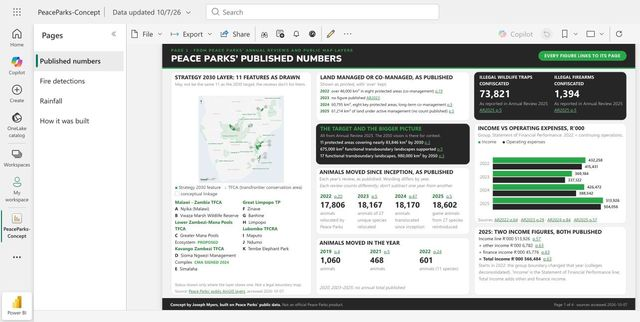
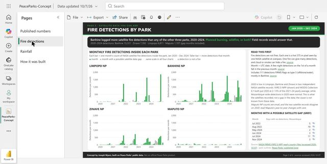
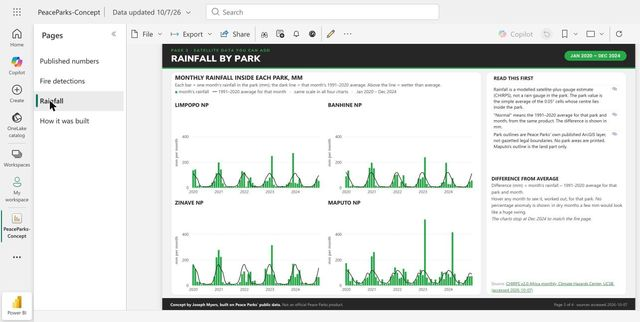

Power BI version
Built in Power BI
This page mirrors a 4-page Power BI report built on the same data model.
The .pbix file is available on request.



Page 1 · From Peace Parks’ Annual Reviews and public map layers
Peace Parks’ published numbers
Strategy 2030 layer: 11 features as drawn
May not be the same 11 as the 2030 target; the reviews don't list them.
Strategy 2030 feature TFCA (transfrontier conservation area) conceptual linkage
Malawi - Zambia TFCA
- A Nyika (Malawi)
- B Vwaza Marsh Wildlife Reserve
Lower Zambezi-Mana Pools TFCA
- C Greater Mana Pools Ecosystem Proposed
Kavango Zambezi TFCA
- D Sioma Ngwezi Management Complex CMA Signed 2024
- E Simalaha
Great Limpopo TP
- F Zinave
- G Banhine
- H Limpopo
Lubombo TFCRA
- I Maputo
- J Ndumo
- K Tembe Elephant Park
Status shown only where the layer stores one. Not a legal boundary map. Source: Peace Parks' public ArcGIS layers, accessed 2026-10-07. Country outlines: Natural Earth.
Land managed or co-managed, as published
Shown as printed, with 'over' kept.
- 2022 over 46,000 km² in eight protected areas (co-management) p.19
- 2023 no figure published AR2023
- 2024 60,795 km², eight key protected areas, long-term co-management p.5
- 2025 61,214 km² of land under active management (no count published) p.5
The target and the bigger picture
All from Annual Review 2025. The 2050 vision is there for context.
- 11 protected areas covering nearly 83,846 km² by 2030 p.3
- 675,000 km² functional transboundary landscapes supported p.5
- 17 functional transboundary landscapes, 980,000 km² by 2050 p.3
Animals moved since inception, as published
Each year's review, as published. Wording differs by year.
Each review counts differently; don't subtract one year from another.
Income vs operating expenses, R'000
Group, Statement of Financial Performance. 2022 = continuing operations.
Income Operating expenses
Sources: AR2022 p.64 · AR2023 p.29 · AR2024 p.84 · AR2025 p.57
2025: two income figures, both published
- Income line R'000 513,926 p.57
- + other income R'000 6,782 p.63
- + finance income R'000 45,776 p.63
- = Total Income R'000 566,484 p.63
Starts in 2022: the group boundary changed that year (colleges deconsolidated). 'Income' is the Statement of Financial Performance line; Total Income adds other and finance income.
Page 2 · Satellite data you can add
Fire detections by park
Monthly fire detections inside each park
Each bar = one month's count of NASA satellite fire detections inside the park, Jan 2020 – Dec 2024. Taller bar = more detections that month.
month month with a possible satellite data gap · same scale in all four charts · a detection is not a fire
Limpopo NP
Banhine NP
Zinave NP
Maputo NP
Show the numbers
Limpopo National Park
| Jan | Feb | Mar | Apr | May | Jun | Jul | Aug | Sep | Oct | Nov | Dec | |
|---|---|---|---|---|---|---|---|---|---|---|---|---|
| 2020 | 1 | 1 | 0 | 1 | 5 | 1 | 0 | 25 | 1 | 2 | 2 | 0 |
| 2021 | 0 | 0 | 0 | 0 | 0 | 0 | 72 | 1 | 3 | 170 | 1,210 | 2 |
| 2022 | 1 | 0 | 0 | 0 | 1 | 0 | 0* | 120* | 19 | 48 | 647 | 0 |
| 2023 | 1 | 0 | 0 | 0 | 1 | 4 | 109 | 363 | 1,628 | 4 | 440 | 27 |
| 2024 | 0 | 0 | 11 | 0 | 0* | 0* | 1* | 2 | 29 | 1,853 | 0* | 5 |
Banhine National Park
| Jan | Feb | Mar | Apr | May | Jun | Jul | Aug | Sep | Oct | Nov | Dec | |
|---|---|---|---|---|---|---|---|---|---|---|---|---|
| 2020 | 34 | 4 | 6 | 16 | 43 | 46 | 113 | 120 | 41 | 20 | 9 | 6 |
| 2021 | 0 | 0 | 3 | 14 | 50 | 16 | 27 | 84 | 760 | 557 | 1,201 | 278 |
| 2022 | 20 | 162 | 124 | 7 | 5 | 39 | 128* | 776* | 1,337 | 726 | 219 | 5 |
| 2023 | 15 | 2 | 3 | 12 | 33 | 45 | 95 | 166 | 530 | 688 | 1,751 | 625 |
| 2024 | 4 | 85 | 26 | 18 | 25* | 424* | 305* | 304 | 1,435 | 971 | 340* | 433 |
Zinave National Park
| Jan | Feb | Mar | Apr | May | Jun | Jul | Aug | Sep | Oct | Nov | Dec | |
|---|---|---|---|---|---|---|---|---|---|---|---|---|
| 2020 | 21 | 2 | 8 | 2 | 3 | 3 | 11 | 30 | 39 | 101 | 10 | 1 |
| 2021 | 0 | 0 | 0 | 1 | 8 | 3 | 24 | 101 | 131 | 270 | 637 | 79 |
| 2022 | 0 | 8 | 9 | 0 | 24 | 71 | 104* | 292* | 389 | 729 | 30 | 1 |
| 2023 | 0 | 0 | 0 | 3 | 12 | 74 | 120 | 149 | 408 | 467 | 204 | 220 |
| 2024 | 7 | 13 | 42 | 83 | 304* | 246* | 166* | 425 | 532 | 600 | 27* | 148 |
Maputo National Park
| Jan | Feb | Mar | Apr | May | Jun | Jul | Aug | Sep | Oct | Nov | Dec | |
|---|---|---|---|---|---|---|---|---|---|---|---|---|
| 2020 | 77 | 8 | 17 | 23 | 34 | 25 | 0 | 37 | 61 | 0 | 29 | 1 |
| 2021 | 1 | 0 | 0 | 93 | 53 | 1 | 28 | 35 | 37 | 6 | 0 | 0 |
| 2022 | 3 | 30 | 2 | 0 | 0 | 14 | 5* | 31* | 47 | 0 | 13 | 33 |
| 2023 | 24 | 0 | 0 | 15 | 2 | 17 | 12 | 21 | 46 | 21 | 0 | 0 |
| 2024 | 30 | 9 | 0 | 0 | 7* | 2* | 36* | 2 | 34 | 1 | 10* | 74 |
Detections per month, all confidence levels. * month with a possible satellite data gap. Each value links to its NASA FIRMS VIIRS S-NPP Mozambique yearly file, accessed 2026-10-07.
| Read this first | |
|---|---|
| Fire detections are not fires. Each one is a hot 375 m pixel seen by one NASA satellite at overpass. One fire can give many detections, and cloud or smoke can hide a fire. | source |
| Month = UTC date. A few night detections on the 1st of a month fall in the previous month. | source |
| Includes 111 detections FIRMS flags as type 3 (offshore/water), mostly in Banhine. | source |
2020 is low in Limpopo, Banhine and Zinave in two independent NASA satellite records: VIIRS S-NPP (shown) and MODIS Collection 6.1 both put 2020 at 2–13% of the 2021–24 yearly average, while Mozambique-wide detections in 2020 were normal. This is what the satellites recorded, not a gap in the data; the cause is not known from these data.
Maputo NP counts are small, and the two satellite records disagree on 2020; read Maputo's year-to-year changes with care.
Months with a possible satellite gap (grey)
| Month | Days with no detections, Mozambique | |
|---|---|---|
| Jul 2022 | 5 | source |
| Aug 2022 | 10 | source |
| May 2024 | 2 | source |
| Jun 2024 | 3 | source |
| Jul 2024 | 11 | source |
| Nov 2024 | 3 | source |
Source: NASA FIRMS VIIRS S-NPP yearly country files (accessed 2026-10-07) · park outlines: Peace Parks' published layer
Page 3 · Satellite data you can add
Rainfall by park
Monthly rainfall inside each park, mm
Each bar = one month's rainfall in the park (mm); the dark line = that month's 1991–2020 average. Above the line = wetter than average.
month's rainfall 1991–2020 average for that month · same scale in all four charts · Jan 2020 – Dec 2024
Limpopo NP
Banhine NP
Zinave NP
Maputo NP
Show the numbers
Limpopo National Park
| Jan | Feb | Mar | Apr | May | Jun | Jul | Aug | Sep | Oct | Nov | Dec | |
|---|---|---|---|---|---|---|---|---|---|---|---|---|
| 2020 | 137.0 | 143.1 | 14.6 | 22.6 | 4.5 | 11.9 | 7.9 | 12.4 | 17.4 | 42.4 | 52.9 | 113.8 |
| 2021 | 197.6 | 143.3 | 35.4 | 11.3 | 6.3 | 9.5 | 6.7 | 5.5 | 6.2 | 18.4 | 62.7 | 130.5 |
| 2022 | 122.1 | 7.8 | 52.7 | 81.3 | 38.2 | 18.8 | 11.2 | 4.8 | 8.1 | 32.0 | 52.8 | 54.4 |
| 2023 | 79.9 | 249.0 | 24.0 | 10.8 | 12.1 | 8.0 | 14.5 | 6.2 | 27.7 | 40.6 | 40.3 | 270.9 |
| 2024 | 37.8 | 32.7 | 72.2 | 24.9 | 6.0 | 8.2 | 6.8 | 6.8 | 13.3 | 30.8 | 68.2 | 54.9 |
| 1991–2020 average | 114.6 | 88.5 | 71.5 | 27.1 | 9.3 | 8.9 | 9.3 | 8.4 | 13.6 | 24.6 | 67.5 | 96.2 |
Banhine National Park
| Jan | Feb | Mar | Apr | May | Jun | Jul | Aug | Sep | Oct | Nov | Dec | |
|---|---|---|---|---|---|---|---|---|---|---|---|---|
| 2020 | 90.2 | 134.3 | 13.2 | 19.3 | 5.0 | 6.9 | 7.7 | 8.9 | 9.6 | 27.2 | 55.7 | 156.2 |
| 2021 | 195.8 | 151.9 | 16.8 | 10.5 | 9.0 | 8.5 | 7.9 | 3.5 | 4.0 | 16.6 | 47.7 | 100.8 |
| 2022 | 103.1 | 10.5 | 48.2 | 98.1 | 34.9 | 11.3 | 9.2 | 3.5 | 4.9 | 28.2 | 72.6 | 68.5 |
| 2023 | 82.1 | 238.5 | 30.9 | 11.5 | 11.7 | 5.3 | 8.7 | 5.0 | 15.9 | 39.8 | 46.2 | 195.6 |
| 2024 | 29.7 | 26.6 | 75.5 | 25.5 | 5.1 | 6.9 | 5.7 | 4.0 | 8.4 | 23.2 | 47.6 | 57.5 |
| 1991–2020 average | 120.2 | 88.4 | 58.2 | 24.6 | 9.7 | 8.9 | 8.4 | 6.6 | 8.3 | 20.2 | 60.7 | 110.7 |
Zinave National Park
| Jan | Feb | Mar | Apr | May | Jun | Jul | Aug | Sep | Oct | Nov | Dec | |
|---|---|---|---|---|---|---|---|---|---|---|---|---|
| 2020 | 160.2 | 131.3 | 30.0 | 26.5 | 6.1 | 17.1 | 7.0 | 8.5 | 12.4 | 14.4 | 69.5 | 219.8 |
| 2021 | 277.9 | 223.9 | 25.1 | 13.8 | 15.8 | 28.9 | 10.2 | 8.1 | 5.8 | 12.5 | 26.7 | 88.9 |
| 2022 | 109.8 | 27.8 | 91.5 | 107.2 | 33.4 | 38.4 | 8.9 | 6.1 | 6.4 | 21.5 | 131.0 | 89.9 |
| 2023 | 87.1 | 314.3 | 84.5 | 18.0 | 8.5 | 12.9 | 9.0 | 10.2 | 14.3 | 50.1 | 74.9 | 169.1 |
| 2024 | 65.7 | 90.2 | 120.7 | 24.7 | 7.3 | 22.4 | 6.2 | 10.0 | 11.4 | 17.6 | 65.5 | 65.5 |
| 1991–2020 average | 165.6 | 127.6 | 103.1 | 34.0 | 12.4 | 15.7 | 9.4 | 9.6 | 11.5 | 23.0 | 65.2 | 136.2 |
Maputo National Park
Rainfall in mm. Each value links to its CHIRPS v2.0 Africa monthly file, accessed 2026-10-07.
| Read this first | |
|---|---|
| Rainfall is a modelled satellite-plus-gauge estimate (CHIRPS), not a rain gauge in the park. The park value is the simple average of the 0.05° cells whose centre lies inside the park. | source |
| "Normal" means the 1991–2020 average for that park and month, from the same product. The difference is shown in mm. | source |
| Park outlines are Peace Parks' own published ArcGIS layer, not gazetted legal boundaries. No park areas are printed. Maputo's outline is the land part only. | source |
Difference from average
Difference (mm) = month's rainfall − 1991-2020 average for that park and month.
Hover any month to see it, worked out, for that park. No percentage anomaly is shown: in dry months a few mm would look like a huge swing.
The charts stop at Dec 2024 to match the fire page.
Source: CHIRPS v2.0 Africa monthly, Climate Hazards Center, UCSB (accessed 2026-10-07)
Page 4 · Process and accuracy
How this was built and checked
- Step 01 Public sources Annual Reviews, peaceparks.org, public ArcGIS layers, NASA FIRMS, CHIRPS.
- Step 02 Extraction Every figure taken with its exact sentence and PDF page.
- Step 03 Re-derivation A second, independent pass recomputed a sample of figures from the raw files.
- Step 04 Sceptical review A sceptical reviewer hunted for anything a data manager would question.
- Step 05 Clean tables One row per fact, with its source link and access date.
- Step 06 Report This report. Every number links back to its source.
The accuracy scorecard
Every value is sourced; 99 re-derived independently, 99 matched.
- Published numbers page: 29
- Fire and rainfall pages: 528
- Same item, two published values (this page): 13 more
- Sourced values in charts, tiles and tables: 570
- Independently re-derived: 99 individually (29 published numbers + 13 same-item values + 57 satellite values), plus all 240 fire months in aggregate
- Matched: 99 of 99 (and 20 of 20 park-year fire totals)
- Values corrected: 0
- 31 presentation fixes before release
Full check log available on request.
What a single source of truth catches
Some are different definitions or re-presentations; for others the documents don't say why. Both values, both links.
1 Animals reintroduced, 2025 · different date and wording
2 Animals translocated in 2019 · post dated 19 Dec 2019; counts moves 'to these two protected areas'
3 2030 co-managed area target · target figure changed by 100 km²
4 Five priority landscapes · three published sizes
675,990 km² AR2023 p.5 · 680,000 km² AR2024 p.5 · 675,000 km² AR2025 p.3
5 Strategy 2030 key protected areas; Vision landscapes · count updated between editions
10 key protected areas AR2022 p.5 · 18 landscapes AR2023 p.13 · 17 landscapes AR2024 p.5 · 11 key protected areas AR2025 p.4
6 Income, 2025 (definition) · two definitions, reconciles exactly (not an error)
513,926 income line AR2025 p.57 · 566,484 Total Income AR2025 p.63
7 2021 finance, re-presented · re-presented after deconsolidation (not an error)
371,763 income line AR2021 p.89 · 360,489 operating expenses AR2021 p.89 · 305,006 income (2021 re-presented) AR2022 p.64 · 255,156 operating expenses (2021 re-presented) AR2022 p.64
How AI was used
AI was used to raise accuracy, not to generate numbers. An AI pass read every annual-review page and pulled each figure with its exact sentence and page. A second pass independently recomputed a sample of figures from the raw files without seeing the first. A third pass played a sceptical Peace Parks data manager and hunted for anything he would question. Every number here comes from a named public file. No number here is estimated by us; the rainfall series is CHC's modelled product. The right datasets matter most; AI helps read them carefully.
Separating fewer incidents from less reporting
In May 2025, the number of reported elephant incidents had dropped to 31 – down from 85 for January 2022.
“Either there are fewer incidents, or the intensity of reporting is dropping.”
Peace Parks team, Maputo National Park (news post, 31 July 2025)
Recording how each report came in, and the effort behind it, would help tell those two apart.
What we deliberately did not show
- No rhino, ranger, patrol or collar locations. No rhino moves at all, no fire points (monthly counts only), no patrol areas and no ranger numbers.
- No personal data. ArcGIS editor usernames and editor notes were dropped. Officials' names were trimmed from quotes. No staff names.
- No forecasts, projections or trend lines into the future. No "at this rate". No % progress toward targets. No computed % changes (the one exception is the 2020 satellite cross-check note on the fire page). No annual moves derived by subtracting cumulative totals.
- No modelled estimates presented as facts. The wildlife estimate and climate projections are not in this report.